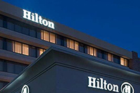

<div class="tab-pane" id="tab_5">
	<div class="panel-group" id="accordion5">
		<!-- TRANSPORTATION CONTENT -->
		<div class="panel panel-default">
			<div class="panel-heading">
				<h4 class="panel-title">
					<a href="#accordion5_1" data-parent="#accordion5" data-toggle="collapse" class="accordion-toggle">Transportation</a>
				</h4>
			</div>
			<div class="panel-collapse collapse in" id="accordion5_1">
				<div class="panel-body">
					<p>Attendees who are traveling by air to the NDS meeting in Rockville, Maryland have a choice of either airport:</p>

					<ul>
						<li>
							<a href="http://www.metwashairports.com/reagan/reagan.htm" target="_blank">Reagan National Airport <i class="fa fa-external-link-square" title="external link"></i></a> (DCA)<br />
							Approximately 26 miles from Rockville, Maryland
						</li>
						<br>
						<li>
							<a href="http://www.metwashairports.com/dulles/dulles.htm" target="_blank">Dulles International Airport <i class="fa fa-external-link-square" title="external link"></i></a> (IAD)<br />
							Approximately 28 miles from Rockville, Maryland
						</li>
					</ul>

					<p>Travelers have several ground transportation options for getting from the airport to Rockville: Metrorail, buses, taxis, shared van, and rental cars. Please consult the ground transportation options on the website of the airport you are using.</p>

					<p><strong>PLEASE NOTE:</strong> The official NDS conference hotel is Metrorail accessible via the Twinbrook Metro Station on the Red Line. The Twinbrook Metro Station is directly out the back door of the hotel.</p>
				</div>
			</div>
		</div>
		<!-- LODGING CONTENT -->
                <div class="panel panel-default">
                        <div class="panel-heading">
                                <h4 class="panel-title">
                                        <a href="#accordion5_2" data-parent="#accordion5" data-toggle="collapse" class="accordion-toggle">Lodging</a>
                                </h4>
                        </div>
                        <div class="panel-collapse collapse" id="accordion5_2">
                                <div class="panel-body">
					<p>
						<a href="http://www3.hilton.com/en/hotels/maryland/hilton-washington-dc-rockville-hotel-and-executive-meeting-ctr-IADMRHF/index.html" target="_blank">Hilton Washington DC/Rockville Hotel &amp; Executive Meeting Center <i class="fa fa-external-link-square" title="external link"></i></a><br />
						1750 Rockville Pike, Rockville, MD 20852-1699, USA
					</p>

					<a href="http://www3.hilton.com/en/hotels/maryland/hilton-washington-dc-rockville-hotel-and-executive-meeting-ctr-IADMRHF/index.html" target="_blank"></a>

					<p>The hotel is a unique landmark among hotels in Rockville, Maryland, a key suburb of Washington DC. It is conveniently located to downtown Rockville. Access to Washington, D.C. is easy&mdash;the Twinbrook Metro Station on the Red Line is directly out the back door of the hotel!</p>

					<p>A block of rooms have been set aside for NDS attendees for October 22-24, 2014.</p>

					<p>NDS Rate: $209 (plus tax) if booked on or before October 1, 2014.</p>

					<p>Rate includes free guest room internet and free parking.</p>

					<p><strong>NOTE:</strong> You may cancel your Hilton hotel room reservation without financial penalty through October 20th. Therefore, you are strongly encouraged to reserve your room early to take advantage of the special rate even if your plans to attend the meeting are tentative.</p>

					<p>To reserve your hotel room at the Hilton Washington DC/Rockville Hotel &amp; Executive Meeting Center:</p>

					<ul>
						<li><a href="http://www.hilton.com/en/hi/groups/personalized/I/IADMRHF-OND-20141022/index.jhtml" target="_blank">Go online <i class="fa fa-external-link-square" title="external link"></i></a></li>
						<li>Or call toll free 1-800-445-8667 and refer to the National Data Service (group code OND)</li>
					</ul>

					<p><strong>Note:</strong> If you want to extend your stay for nights other than October 22 &amp; 23, please reserve your room by telephone. </p>
                                </div>
                        </div>
                </div>
		<!-- PARKING CONTENT -->
                <div class="panel panel-default">
                        <div class="panel-heading">
                                <h4 class="panel-title">
                                        <a href="#accordion5_3" data-parent="#accordion5" data-toggle="collapse" class="accordion-toggle">Parking</a>
                                </h4>
                        </div>
                        <div class="panel-collapse collapse" id="accordion5_3">
                                <div class="panel-body">
					<p>Parking for all NDS meeting attendees will be complimentary for anyone driving to the hotel. This includes not only hotel guests but local area attendees as well.  </p>

					<p>You should use the parking garage by the hotel: take a ticket to enter the garage, park anywhere in the garage, then take your ticket to the hotel's front desk to have it validated. Present the validated ticket when exiting the garage and there will be no charge for parking.</p>
                                </div>
                        </div>
                </div>
	</div>
</div>
